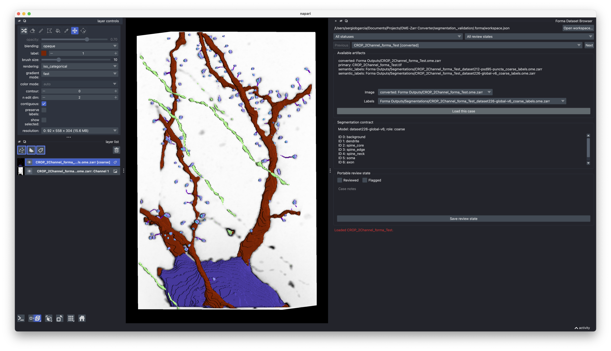
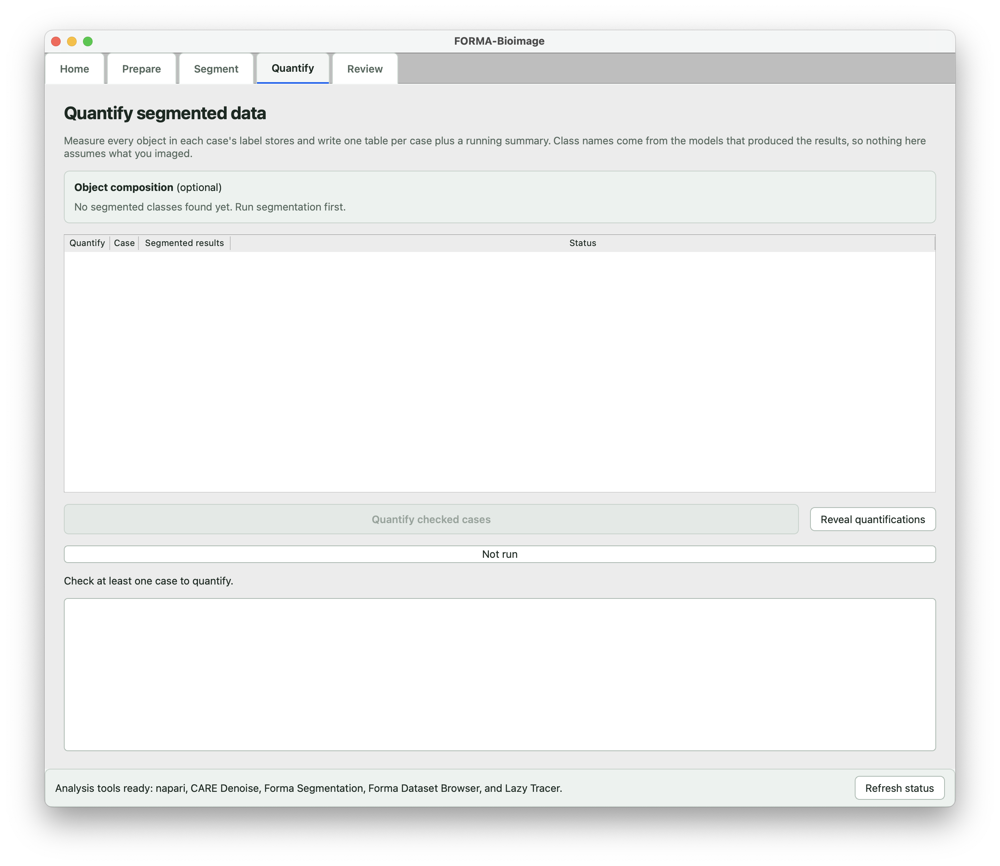

Forma
3D microscopy analysis on a Mac or a Windows PC, GPU-accelerated on Apple silicon and NVIDIA cards: convert, segment, measure, review.
Apple silicon Macs and Windows PCs with an NVIDIA card.

What it does
- Converts TIFF, ND2, and CZI stacks to OME-Zarr, the open community standard for large bioimages, and runs every later step on that store.
- Segments in 3D with nnU-Net on the GPU of an Apple silicon Mac, on an NVIDIA card on Windows, or on the processor. Our model or your own, packaged with a short manifest.
- Measures every segmented object into tables, with the classes and measurements taken from whichever model produced the result, from whole-cell morphology to organelles.
- Segments images above the model's limit in pieces and continues a stopped job from the last finished piece.
- Opens everything in napari, which it installs for you: raw fluorescence and segmentation streamed from the OME-Zarr pyramid, label corrections saved as new revisions, and neuron tracing with SWC export.
- No Python setup. One version for Mac and Windows.

Before you download
- Forma is not notarized by Apple and not signed on Windows. The install guide shows the one extra step each system asks for.
- The analysis tools take about 2 GB and the model 1.1 GB, downloaded once.
- The app is free for noncommercial use. The app code is GPL-3.0 and the model weights are CC BY-NC 4.0.
Feedback
Forma is new. If something fails or should work differently, open an issue.